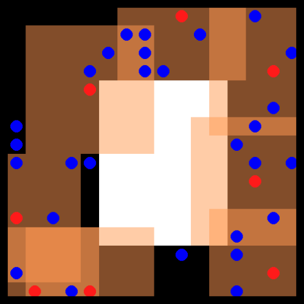
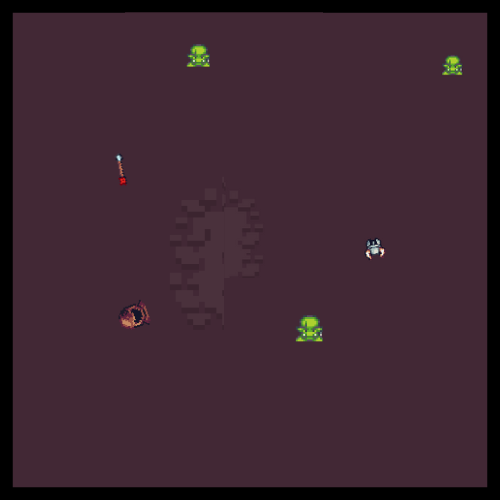
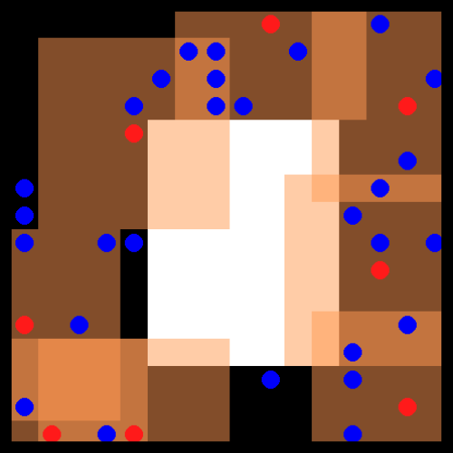
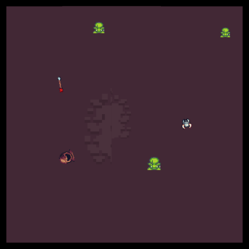

Home
{kind=link}
Offline Multi-Agent Reinforcement Learning Datasets and Baselines


Going Off-the-Grid! 🤖 ⚡ 🔌 🔋#
Offline MARL holds great promise for real-world applications by utilising static datasets to build decentralised controllers of complex multi-agent systems. However, currently offline MARL lacks a standardised benchmark for measuring meaningful research progress. Off-the-Grid MARL (OG-MARL) fills this gap by providing a diverse suite of datasets with baselines on popular MARL benchmark environments in one place, with a unified API and an easy-to-use set of tools.
OG-MARL forms part of the InstaDeep MARL ecosystem, developed jointly with the open-source community. To join us in these efforts, reach out, raise issues or just 🌟 to stay up to date with the latest developments!
Quickstart 🏎️#
Clone this repository.
git clone https://github.com/instadeepai/og-marl.git
Install og-marl and its dependencies. We tested og-marl with Python 3.9. Consider using a conda virtual environment.
pip install -e .
pip install flashbax==0.1.2
Download environment dependencies. We will use SMACv1 in this example.
bash install_environments/smacv1.sh
Download a dataset.
python examples/download_dataset.py --env=smac_v1 --scenario=3m
Run a baseline. In this example we will run MAICQ.
python baselines/main.py --env=smac_v1 --scenario=3m --dataset=Good --system=maicq
Dataset API#
We provide a simple demonstrative notebook of how to use OG-MARL's dataset API here:

Datasets 🎥#
We have generated datasets on a diverse set of popular MARL environments. A list of currently supported environments is included in the table below. It is well known from the single-agent offline RL literature that the quality of experience in offline datasets can play a large role in the final performance of offline RL algorithms. Therefore in OG-MARL, for each environment and scenario, we include a range of dataset distributions including Good, Medium, Poor and Replay datasets in order to benchmark offline MARL algorithms on a range of different dataset qualities. For more information on why we chose to include each environment and its task properties, please read our accompanying paper.
 



Dataset Backends 🔌#
We are in the process of migrating our datasets from TF Records to Flashbax Vaults. Flashbax Vaults have the advantage of being significantly more flexible than the TF Record Datasets.
Flashbax Vaults ⚡#
| Environment | Scenario | Agents | Act | Obs | Reward | Types | Repo |
|---|---|---|---|---|---|---|---|
| 🔫SMAC v1 | 3m 8m 2s3z 5m_vs_6m 27m_vs_30m 3s5z_vs_3s6z 2c_vs_64zg |
3 8 5 5 27 8 2 |
Discrete | Vector | Dense | Homog Homog Heterog Homog Homog Heterog Homog |
source |
| 💣SMAC v2 | terran_5_vs_5 zerg_5_vs_5 terran_10_vs_10 |
5 5 10 |
Discrete | Vector | Dense | Heterog | source |
| 🚅Flatland | 3 Trains 5 Trains |
3 5 |
Discrete | Vector | Sparse | Homog | source |
| 🐜MAMuJoCo | 2-HalfCheetah 2-Ant 4-Ant |
2 2 4 |
Cont. | Vector | Dense | Heterog Homog Homog |
source |
| 🐻PettingZoo | Pursuit Co-op Pong |
8 2 |
Discrete Discrete |
Pixels Pixels |
Dense | Homog Heterog |
source |
Legacy Datasets (still to be migrated to Vault) 👴#
| Environment | Scenario | Agents | Act | Obs | Reward | Types | Repo |
|---|---|---|---|---|---|---|---|
| 🐻PettingZoo | PistonBall KAZ |
15 2 |
Cont. Discrete |
Pixels Vector |
Dense | Homog Heterog |
source |
| 🏙️CityLearn | 2022_all_phases | 17 | Cont. | Vector | Dense | Homog | source |
| 🔌Voltage Control | case33_3min_final | 6 | Cont. | Vector | Dense | Homog | source |
| 🔴MPE | simple_adversary | 3 | Discrete. | Vector | Dense | Competitive | source |
Dataset and Vault Locations#
For OG-MARL's systems, we require the following dataset file structure:
examples/
|_> ...
og_marl/
|_> ...
vaults/
|_> smac_v1/
|_> 3m.vlt/
| |_> Good/
| |_> Medium/
| |_> Poor/
|_> ...
|_> smac_v2/
|_> terran_5_vs_5.vlt/
| |_> Good/
| |_> Medium/
| |_> Poor/
|_> ...
...
See Also 🔎#
InstaDeep's MARL ecosystem in JAX. In particular, we suggest users check out the following sister repositories:
- 🦁 Mava: a research-friendly codebase for distributed MARL in JAX.
- 🌴 Jumanji: a diverse suite of scalable reinforcement learning environments in JAX.
- 😎 Matrax: a collection of matrix games in JAX.
- 🔦 Flashbax: accelerated replay buffers in JAX.
- 📈 MARL-eval: standardised experiment data aggregation and visualisation for MARL.
Related. Other libraries related to accelerated MARL in JAX.
- 🦊 JaxMARL: accelerated MARL environments with baselines in JAX.
- ♟️ Pgx: JAX implementations of classic board games, such as Chess, Go and Shogi.
- 🔼 Minimax: JAX implementations of autocurricula baselines for RL.
Citing OG-MARL  #
#
If you use OG-MARL in your work, please cite the library using:
@inproceedings{formanek2023ogmarl,
author = {Formanek, Claude and Jeewa, Asad and Shock, Jonathan and Pretorius, Arnu},
title = {Off-the-Grid MARL: Datasets and Baselines for Offline Multi-Agent Reinforcement Learning},
year = {2023},
publisher = {AAMAS},
booktitle = {Extended Abstract at the 2023 International Conference on Autonomous Agents and Multiagent Systems},
}
Acknowledgements 🙏#
The development of this library was supported with Cloud TPUs from Google's TPU Research Cloud (TRC) 🌤.